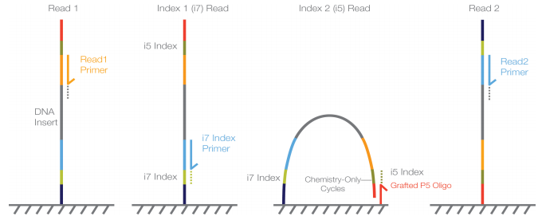

Day 1 - Reproducible project, public data, FASTQ QC, trimming, and reference files
Build the RNA-seq and ChIP-seq inputs used by the rest of the workshop
1. Before we start
You should have completed Day 0 and should be working from the root of your own workshop_ngs repository.
At the start of each practical session:
- Windows users should open Visual Studio Code connected to Ubuntu WSL, open a WSL terminal, and run the commands there.
- macOS and Linux users should open the
workshop_ngsfolder in Visual Studio Code and use the VS Code terminal or a normal terminal. - Before running workshop commands, move to the repository root:
cd ~/workshop_ngs
pwdIf your repository is stored somewhere else, replace this path with the location of your own workshop_ngs folder. The command pwd should end with workshop_ngs.
Use Docker as the default runtime. The scripts below contain only the analysis commands. The Docker Hub image appears in the command that runs each script, for example docker.io/fgualdr/ngs-curl:latest or docker.io/fgualdr/ngs-fastp:latest.
2. Overview
Day 1 starts the scientific workflow and sets the working style for the rest of the workshop.
Today we will discuss:
- reproducibility in practical bioinformatics;
- repository structure: Git/GitHub, Docker/Docker Hub, scripts, metadata, logs, and outputs;
- the reference-based NGS workflow used in this workshop;
- where public raw FASTQ files and metadata are stored;
- how to prepare simple metadata for script-based downloads;
- how to download selected RNA-seq and ChIP-seq FASTQ files;
- how to download a matched reference genome and annotation;
- how to inspect compressed FASTQ files from the command line;
- how to run
fastpfor FASTQ quality assessment and trimming; - how to inspect the
fastpHTML/JSON reports.
This workshop follows one workflow:
public data + metadata
-> reference genome + annotation
-> FASTQ quality assessment and preprocessing with fastp
-> RNA-seq mapping/counting/differential expression
-> ChIP-seq mapping/peak calling/motifs
-> RNA-seq and ChIP-seq integration
-> genome-browser inspection and interpretationToday we retrieve the data required for Days 2, 3, and 4.
The main study is the HP1021 Helicobacter pylori multi-omics study:
- RNA-seq:
E-MTAB-13025 - ChIP-seq:
E-MTAB-13026
The full publication analysis is more complex than this teaching workflow. Our small subset captures the main logic of the published analysis, but it is simplified for laptop-scale execution.
3. Reproducibility in bioinformatics
Bioinformatics results depend on many linked choices:
- which public samples were used;
- which files were downloaded;
- which reference genome and annotation were used;
- which software versions ran the commands;
- which command-line options were used;
- which intermediate and final outputs were produced;
- how the outputs were interpreted.
For this workshop, reproducibility means:
data provenance + scripts + software versions + outputs + interpretation| Project element | Reproducibility role | Commit to Git? |
|---|---|---|
| Metadata table | Defines samples, assays, conditions, replicates, public accessions, and local FASTQ paths | Yes |
| Shell script | Records the command logic | Yes |
| Docker image name or Dockerfile | Records the software environment | Yes |
| Log file | Records what happened when a command ran | Usually yes if small |
| FASTQ files | Large sequencing input files | No |
| Trimmed FASTQ files | Large generated intermediate files | No |
| fastp reports | Diagnostic outputs showing FASTQ quality and trimming/filtering results | Usually yes if small enough |
The important idea is simple: GitHub stores the recipe and small evidence files, not the heavy sequencing files.
4. Git and GitHub
Git is the local version-control system. It records changes to text files such as README.md, scripts, metadata, and notes. GitHub is the remote platform where you can back up and share the repository.
In this workshop, Git/GitHub are used for:
- project history;
- transparent changes to scripts and metadata;
- collaboration and troubleshooting;
- documenting what was done each day;
- submitting or sharing the final repository.
Git should not be used as storage for large sequencing data. FASTQ, BAM, BAI, bigWig, SRA files, large archives, and generated indices should be ignored.
During this lesson, we will browse to each student’s GitHub account and create an empty personal repository for the workshop.
4.1 Create and initialize Git locally
From the terminal, make sure you are in your local workshop folder:
cd ~/workshop_ngs
pwdInitialize Git locally:
git init
git statusSet your Git identity if it has not already been configured on this computer:
git config --global user.name "Your Name"
git config --global user.email "your.email@example.com"
git config --global init.defaultBranch main4.2 Create an empty GitHub repository
Before connecting your local folder to GitHub, create an empty repository in your GitHub account.
In your browser:
- Go to GitHub: https://github.com/
- Log in.
- Click New repository.
- Use this repository name:
workshop_ngs- Choose Public or Private, depending on the course instructions.
- Do not add a README file.
- Do not add a
.gitignorefile. - Do not add a license.
- Click Create repository.
You should now see an empty GitHub repository page with a URL like:
https://github.com/YOUR_USERNAME/workshop_ngsKeep this page open. You will use this URL in the next terminal command.
Now connect your local folder to the empty GitHub repository. Replace YOUR_USERNAME with your GitHub username:
git remote add origin https://github.com/YOUR_USERNAME/workshop_ngs.git
git remote -v4.3 First Git commit
The first commit will be made after we create the project folders, the .gitignore, and a README file. This way Git starts by recording the intended repository structure rather than an empty folder.
The .gitignore file is a hidden text file that tells Git which files should not be tracked or uploaded to GitHub. In this workshop, GitHub stores the reproducible record of the analysis: scripts, metadata, notes, small tables, figures, logs, and documentation. It is not used as storage for large sequencing or alignment files.
NGS analyses often generate large FASTQ, BAM, bigWig, index, and temporary files. These files can quickly exceed practical GitHub storage limits and make repositories slow or difficult to clone. Larger project-related files are usually shared through other systems, such as institutional storage, shared drives, Zenodo, OSF, Figshare, or public sequencing archives. Those options are useful, but they are outside the scope of this workshop.
Create .gitignore in VS Code, or open it from the terminal:
nano .gitignorePaste this content, then save and close nano with Ctrl+X, then Y, then Enter:
.DS_Store
.Rhistory
.RData
*.fastq
*.fq
*.fastq.gz
*.fq.gz
*.sra
*.sam
*.bam
*.bai
*.bw
*.bigWig
*.zip
*.tar
*.tar.gz
reference_genome/*.fa
reference_genome/*.fna
reference_genome/*.fasta
reference_genome/*.gff
reference_genome/*.gff3
reference_genome/*.gtf
reference_genome/*_ncbi_dataset/
reference_genome/*_ncbi_dataset.zip
reference_genome/bowtie2_index/
results/logs/day1/sra_tmp/You should now see .gitignore in the VS Code Explorer. You can open it there like any other text file to inspect or modify it.
Create a minimal README.md file:
nano README.mdPaste this content, then save and close nano with Ctrl+X, then Y, then Enter:
# Reproducible NGS workshopNow make the first commit. Informally, this asks Git to take a snapshot of the small text files that define the project so far.
git status
git add .gitignore README.md
git commit -m "Initialize workshop repository"
git branch -M main
git push -u origin mainWhat these commands do:
| Command | Meaning |
|---|---|
git status |
Show which files are new, modified, staged, or ignored. Run this often. |
git add .gitignore README.md |
Choose the two small text files that should go into the first commit. |
git commit -m "Initialize workshop repository" |
Save the first labeled snapshot in your local Git history. |
git branch -M main |
Make sure the main branch is called main, matching the GitHub default. |
git push -u origin main |
Upload the first commit to GitHub and remember origin main as the default push target. |
5. Docker and Docker Hub
Docker runs software inside container images. A container image is a packaged software environment. A container is a running instance of that image.
Docker Hub is an online registry where images can be downloaded. The repository also contains simple task-specific Dockerfiles under Docker_files/ so each image can be rebuilt if needed.

This connects directly to reproducibility:
- Git tracks the scripts, metadata, and notes that describe what you did;
- Docker image names and tags record which software environment ran those scripts.
Before running analysis images, we will run a small Docker test again together. This assumes that your terminal is already in the workshop_ngs repository root.
5.1 Test Docker
Mount the whole repository into the container and write a test file back into the repository:
docker run --rm \
--platform linux/amd64 \
-v "$PWD:/work" \
-w /work \
alpine:latest \
sh -c 'echo "Hello from Docker" > test_hello.txt'
cat test_hello.txtThis means:
-v "$PWD:/work"mounts your current repository folder inside the container as/work;-w /worktells the container to run from that mounted folder;sh -c 'echo "Hello from Docker" > test_hello.txt'creates a small test file from inside the container;- the container is removed after the command finishes;
cat test_hello.txtconfirms that the file is visible in your repository on your computer.
6. Reference-based NGS analysis
This workshop uses reference-based analysis:
FASTQ reads
-> quality control and trimming
-> alignment to a reference genome
-> filter mapped reads
-> sorted and indexed BAM files
-> assay-specific analysis
-> RNA-seq gene counts and differential expression
-> ChIP-seq coverage tracks, peak calls, and motifsThe reference genome FASTA defines the coordinate system. The annotation GFF3/GTF defines gene and feature coordinates. If the FASTA and annotation come from different assemblies or use different sequence names, mapping, counting, and peak-to-gene integration can fail or silently become wrong.
6.1 Reference genome FASTA
A FASTA file is a plain text file. Each sequence starts with a header line beginning with >, followed by one or more lines of DNA sequence:
>chr1
ATGCGTACGTTAGCTAGCTAGCTAACGATCGATCGATCG...
CGATCGATTTAGCTAGCATCGATCGATCGTACGATCGTA...
>chr2
TTGACGATCGATCGATCGTAGCTAGCTAGCTAACGATCA...For a human reference genome, headers may look like >chr1, >chr2, >chrX, and so on. For a bacterial genome such as H. pylori, there may be one main chromosome sequence and sometimes plasmid sequences. The exact names must match the annotation file. If the FASTA says NC_000915.1 but the annotation says chr1, many tools will not know that these refer to the same sequence.
6.2 Annotation files: GFF3 and GTF
Annotation files are also plain text, but they are tab-separated tables. Each row describes one genomic feature on the FASTA coordinate system:
seqid source type start end score strand phase attributes
chr1 RefSeq gene 1000 2500 . + . ID=geneA;Name=geneA
chr1 RefSeq mRNA 1000 2500 . + . ID=txA;Parent=geneA
chr1 RefSeq exon 1000 1200 . + . Parent=txA
chr1 RefSeq exon 1800 2500 . + . Parent=txAThe first eight columns define where the feature is. The last column stores identifiers and grouping information. In GFF3, fields such as ID= and Parent= connect features together. In GTF, the last column uses entries such as gene_id "geneA"; transcript_id "txA";.
One detail that often causes confusion is coordinate convention. GFF3 and GTF use 1-based closed coordinates: base 1 is the first base, and a feature from 1000 to 1200 includes both base 1000 and base 1200. BED files, which are common for peaks and genome-browser intervals, use 0-based half-open coordinates: the start is counted from 0 and the end is not included.
This sounds annoying because it is. The practical rule is: do not casually copy coordinates between file formats by hand. Use tools that understand the format, such as featureCounts, bedtools, samtools, IGV, and Bioconductor interval classes.
A eukaryotic gene with introns and exons can be represented like this:
FASTA coordinate: chr1:1000-2500
geneA on + strand
1000 1200 1800 2500
|-----------|...........|-----------|
exon 1 intron exon 2
GFF3 rows:
chr1 RefSeq gene 1000 2500 . + . ID=geneA;Name=geneA
chr1 RefSeq mRNA 1000 2500 . + . ID=txA;Parent=geneA
chr1 RefSeq exon 1000 1200 . + . Parent=txA
chr1 RefSeq exon 1800 2500 . + . Parent=txAFor H. pylori, the annotation is simpler because bacterial protein-coding genes usually do not have introns. A typical bacterial annotation is closer to:
NC_000915.1 RefSeq gene 1500 2400 . - . ID=gene-hp0001;Name=hp0001
NC_000915.1 RefSeq CDS 1500 2400 . - 0 ID=cds-hp0001;Parent=gene-hp0001;product=example proteinAnnotation files can be complicated to handle by hand. In this workshop, we use standard GFF3/GTF files and let tools read them for us. Aligners place reads on FASTA coordinates, featureCounts uses the annotation to count RNA-seq reads over genes or CDS features, and integration steps compare ChIP-seq peaks with nearby annotated genes.
For this bacterial workshop, we use matched NCBI reference genome and annotation files stored under reference_genome/.
6.3 Download reference genome and annotation
We will first browse the reference source together:
- NCBI Datasets genome page: GCF_025998455.1
- NCBI FTP directory with the downloadable files: GCF_025998455.1_ASM2599845v1
Create the folders needed for this step:
mkdir -p reference_genome
mkdir -p scripts/day1Create the first analysis script: scripts/day1/01_reference_genome_annotation.sh:
nano scripts/day1/01_reference_genome_annotation.shPaste this script, then save and close nano with Ctrl+X, then Y, then Enter:
#!/usr/bin/env bash
set -euo pipefail
out_dir="reference_genome"
base_url="https://ftp.ncbi.nlm.nih.gov/genomes/all/GCF/025/998/455/GCF_025998455.1_ASM2599845v1"
genome_file="GCF_025998455.1_ASM2599845v1_genomic.fna.gz"
gff_file="GCF_025998455.1_ASM2599845v1_genomic.gff.gz"
gtf_file="GCF_025998455.1_ASM2599845v1_genomic.gtf.gz"
mkdir -p "${out_dir}"
curl -fL "${base_url}/${genome_file}" -o "${out_dir}/genome.fa.gz"
curl -fL "${base_url}/${gff_file}" -o "${out_dir}/annotation.gff3.gz"
curl -fL "${base_url}/${gtf_file}" -o "${out_dir}/annotation.gtf.gz"
gzip -dc "${out_dir}/genome.fa.gz" > "${out_dir}/genome.fa"
gzip -dc "${out_dir}/annotation.gff3.gz" > "${out_dir}/annotation.gff3"
gzip -dc "${out_dir}/annotation.gtf.gz" > "${out_dir}/annotation.gtf"
rm -f "${out_dir}/genome.fa.gz" \
"${out_dir}/annotation.gff3.gz" \
"${out_dir}/annotation.gtf.gz"6.4 Read the first Bash script
Bash is a command-line interpreter: it reads commands from the terminal or from a script file and runs them in order. This first script uses only a few Bash ideas.
| Code part | Meaning |
|---|---|
#!/usr/bin/env bash |
Run this file with Bash. |
set -euo pipefail |
Stop if a command fails, if a variable is missing, or if part of a pipeline fails. |
out_dir="reference_genome" |
Store a reusable value in a variable. |
${out_dir} |
Use the value stored in the variable. |
"${out_dir}/file" |
Build a file path safely. The quotes protect paths if they contain special characters. |
mkdir -p |
Create a folder if needed. Do not fail if it already exists. |
curl -fL URL -o file |
Download a URL and save it as file. |
gzip -dc file.gz > file |
Decompress .gz content and write it into a new file. |
To inspect command options:
docker run --rm \
--platform linux/amd64 \
-v "$PWD:/work" \
-w /work \
docker.io/fgualdr/ngs-curl:latest \
curl --helpdocker run --rm \
--platform linux/amd64 \
-v "$PWD:/work" \
-w /work \
docker.io/fgualdr/ngs-curl:latest \
gzip --help6.5 Run the reference script
Run the script inside the Docker image that contains curl and gzip:
docker run --rm \
--platform linux/amd64 \
-v "$PWD:/work" \
-w /work \
docker.io/fgualdr/ngs-curl:latest \
bash scripts/day1/01_reference_genome_annotation.shExpected outputs:
reference_genome/genome.fa
reference_genome/annotation.gff3
reference_genome/annotation.gtfBefore mapping, confirm that sequence names are present in both files:
grep '^>' reference_genome/genome.fa | head
grep -v '^#' reference_genome/annotation.gtf | head
grep -v '^#' reference_genome/annotation.gtf | wc -l7. From Illumina BCL files to FASTQ files
Illumina instruments image DNA clusters cycle by cycle. The instrument software converts images into base calls and quality estimates. A simplified flow is:
flowcell images
-> intensity files
-> BCL base-call files
-> demultiplexing by sample index
-> per-sample FASTQ files
In paired-end sequencing, the same DNA fragment is read from both ends. The first sequencing read becomes read 1, usually saved as an _R1.fastq.gz file. After index reads identify the sample barcode, the opposite end of the same fragment is sequenced as read 2, usually saved as an _R2.fastq.gz file.
This means paired-end FASTQ files come in matched pairs:
sample_A_R1.fastq.gz read 1 sequences from one end of each fragment
sample_A_R2.fastq.gz read 2 sequences from the opposite endFor each fragment, the R1 and R2 records should remain synchronized: record 1 in the R1 file corresponds to record 1 in the R2 file. Trimming and mapping tools therefore need both files together for paired-end data.
FASTQ files are often called “raw data” in public repositories, but they are already processed outputs of base calling and demultiplexing.
7.1 FASTQ structure and read identifiers
Each FASTQ read has four lines:
@read_identifier
ACGT...
+
quality_stringThe four lines mean:
| FASTQ line | Meaning |
|---|---|
| 1 | Read identifier, usually including instrument/run/lane/tile/coordinate and sometimes read/index information |
| 2 | Called DNA sequence |
| 3 | Separator, often just + |
| 4 | Per-base quality string encoded as Phred quality scores |
An Illumina-style read identifier may look like:
@A00488:92:H2JWNDSX3:2:1101:1234:5678 1:N:0:ATTACTCG+GTCGATTAThe exact format varies, but common fields include:
- instrument name;
- run number;
- flowcell ID;
- lane;
- tile;
- x/y cluster coordinates;
- read number, such as read 1 or read 2;
- filter flag;
- sample index or barcode.
Public archives may rewrite read identifiers, so do not assume every file has exactly the same format.
The quality string encodes Phred quality scores:
\[ Q = -10 \log_{10}(p) \]
where (p) is the estimated probability of an incorrect base call. Q30 means an approximate error probability of 0.001.
FASTQ files may be single-end or paired-end. Paired-end libraries have read 1 and read 2 files, usually named with _R1 and _R2 or _1 and _2. Files are usually compressed as .fastq.gz.
7.2 Public archives we will browse together
There are several routes from a paper or accession to FASTQ files. We will look at these together in the browser:
- NCBI SRA: https://www.ncbi.nlm.nih.gov/sra
- SRA Run Selector: https://www.ncbi.nlm.nih.gov/Traces/study/
- ENA Browser: https://www.ebi.ac.uk/ena/browser/home
- ArrayExpress/BioStudies RNA-seq study:
E-MTAB-13025 - ArrayExpress/BioStudies ChIP-seq study:
E-MTAB-13026
The same biological run can often be reached through more than one archive. The practical difference is how we download the data:
| Route | What we usually get | Practical point |
|---|---|---|
| SRA | run accessions such as SRR... or ERR... |
often uses fasterq-dump; useful but can be slow on laptops |
| ENA | direct FASTQ URLs | easier for teaching: one URL downloads one FASTQ file |
| ArrayExpress/BioStudies | study metadata and SDRF files | useful for sample names, conditions, run accessions, and FASTQ links |
For the main workshop, we use the ENA/ArrayExpress route because it is easier to explain and easier to script.
7.3 Optional SRA route as an example
This is only an example route. We will browse it, but we will not use it as the main Day 1 download route.
The SRA hierarchy is usually:
GSE study
-> GSM sample
-> SRP project
-> SRX experiment
-> SRR/ERR runIf using the SRA Run Selector, you can download a CSV table with run-level metadata. The first column is usually the run accession.
For teaching, start with a tiny CSV created by hand:
mkdir -p raw_data/metadata
nano raw_data/metadata/sra_example.csvPaste this example, then save and close nano:
run_accession,assay,sample,condition
SRR13090294,rnaseq,example_sample,example_conditionCreate the optional script scripts/day1/example_sra_download.sh:
nano scripts/day1/example_sra_download.shPaste this script:
#!/usr/bin/env bash
set -euo pipefail
csv_file="raw_data/metadata/sra_example.csv"
out_dir="raw_data/fastq/sra_example"
mkdir -p "${out_dir}"
if [[ ! -f "${csv_file}" ]]; then
echo "ERROR: CSV file not found: ${csv_file}" >&2
exit 1
fi
tail -n +2 "${csv_file}" | tr -d '\r' |
while IFS=, read -r run_accession assay sample condition
do
[[ -n "${run_accession}" ]] || continue
echo "Downloading ${run_accession}"
fasterq-dump "${run_accession}" \
--split-files \
--threads 2 \
--outdir "${out_dir}"
gzip -f "${out_dir}/${run_accession}"*.fastq
doneRun it only if the optional SRA example is assigned:
docker run --rm \
--platform linux/amd64 \
-v "$PWD:/work" \
-w /work \
docker.io/fgualdr/ngs-sra-tools:latest \
bash scripts/day1/example_sra_download.shThe main idea is the loop: one metadata row gives one run accession, and the script downloads that run.
7.4 ENA/ArrayExpress route for the workshop
For this workshop dataset, ENA/ArrayExpress metadata are the main route because the SDRF files include sample information and FASTQ URLs.
Open the study pages together:
- RNA-seq:
E-MTAB-13025 - ChIP-seq:
E-MTAB-13026
Download the original SDRF metadata files into the project.
To keep track of everything, we will make a tiny script called 02_metadata_download.sh. Use nano, or create the code directly in VS Code.
#!/usr/bin/env bash
set -euo pipefail
mkdir -p raw_data/metadata
curl -L \
https://ftp.ebi.ac.uk/biostudies/fire/E-MTAB-/025/E-MTAB-13025/Files/E-MTAB-13025.sdrf.txt \
-o raw_data/metadata/E-MTAB-13025.sdrf.txt
curl -L \
https://ftp.ebi.ac.uk/biostudies/fire/E-MTAB-/026/E-MTAB-13026/Files/E-MTAB-13026.sdrf.txt \
-o raw_data/metadata/E-MTAB-13026.sdrf.txtRun the code as before:
docker run --rm \
--platform linux/amd64 \
-v "$PWD:/work" \
-w /work \
docker.io/fgualdr/ngs-curl:latest \
bash scripts/day1/02_metadata_download.shOpen the SDRF files directly in VS Code:
code raw_data/metadata/E-MTAB-13025.sdrf.txt
code raw_data/metadata/E-MTAB-13026.sdrf.txtInspect the tab-separated columns. Focus on:
- sample name;
- run accession;
- FASTQ URI or FASTQ file links;
- genotype or strain;
- condition or stimulus;
- replicate;
- assay or library strategy.
For this workshop, keep the WT samples only. We use WT no-stress/no-stimulus samples and WT oxidative-stress/21 percent oxygen samples. We do not use the HP1021 deletion-mutant rows.
WT samples used in the workshop:
| Assay | Condition label | Publication samples | Biological meaning | ENA runs |
|---|---|---|---|---|
| RNA-seq | WT_control |
WT_1, WT_2, WT_3 |
wild type, no stress, 5 percent O2 | ERR11479310, ERR11479311, ERR11479312 |
| RNA-seq | WT_21Oxygen |
WTS_1, WTS_2, WTS_3 |
wild type, oxidative stress, 21 percent O2 | ERR11479313, ERR11479314, ERR11479315 |
| ChIP-seq | WT_control |
WT_1, WT_2, WT_3 |
wild type anti-HP1021 ChIP, no stimulus | ERR11468761, ERR11468762, ERR11468763 |
| ChIP-seq | WT_21Oxygen |
WTS_1, WTS_2, WTS_3 |
wild type anti-HP1021 ChIP, 21 percent oxygen | ERR11468767, ERR11468768, ERR11468769 |
Now create one curated SDRF file directly from the SDRF information. This is not a second metadata table. It is the small edited SDRF subset that we use for the practical download and a selection of renamed columns.
We will open the SDRF in Excel or another spreadsheet program. Our aim is to select samples and relabel relevant columns. In particular, we need:
sample condition read1_url read2_url
In the SDRF file the URLs have ftp:// which sometimes is blocked by firewalls, replace with https:// this can be done in the code or manually in the csv.
Save the edited files as raw_data/metadata/E-MTAB-13025.modified.sdrf.txt and raw_data/metadata/E-MTAB-13026.modified.sdrf.txt.
Alternatively, you may overwrite the original SDRF files, but in that case make sure the filenames used in the script below match the files you actually saved.
7.5 Download selected FASTQ files from the edited SDRF
The download script loops through the rows of E-MTAB-13025.sdrf.txt and E-MTAB-13026.sdrf.txt.
Create scripts/day1/03_download_ena_fastq.sh:
nano scripts/day1/03_download_ena_fastq.shPaste this script:
#!/usr/bin/env bash
set -euo pipefail
metadata_rna="raw_data/metadata/E-MTAB-13025.modified.sdrf.txt"
metadata_chip="raw_data/metadata/E-MTAB-13026.modified.sdrf.txt"
mkdir -p raw_data/fastq/rnaseq
mkdir -p raw_data/fastq/chipseq
mkdir -p results/logs/day1/downloads
tail -n +2 "${metadata_rna}" | tr -d '\r' |
while IFS=$'\t' read -r sample condition read1_url read2_url
do
out_dir="raw_data/fastq/rnaseq"
# here we automatically replace the FTP prefix
read1_url="${read1_url/ftp:\/\/ftp.sra.ebi.ac.uk/https:\/\/ftp.sra.ebi.ac.uk}"
read2_url="${read2_url/ftp:\/\/ftp.sra.ebi.ac.uk/https:\/\/ftp.sra.ebi.ac.uk}"
echo "Downloading RNA-seq ${sample} ${condition} R1"
curl -fL "${read1_url}" -o "${out_dir}/${sample}_${condition}_R1.fastq.gz"
echo "Downloading RNA-seq ${sample} ${condition} R2"
curl -fL "${read2_url}" -o "${out_dir}/${sample}_${condition}_R2.fastq.gz"
done
tail -n +2 "${metadata_chip}" | tr -d '\r' |
while IFS=$'\t' read -r sample condition read1_url read2_url
do
out_dir="raw_data/fastq/chipseq"
read1_url="${read1_url/ftp:\/\/ftp.sra.ebi.ac.uk/https:\/\/ftp.sra.ebi.ac.uk}"
read2_url="${read2_url/ftp:\/\/ftp.sra.ebi.ac.uk/https:\/\/ftp.sra.ebi.ac.uk}"
echo "Downloading ChIP-seq ${sample} ${condition} R1"
curl -fL "${read1_url}" -o "${out_dir}/${sample}_${condition}_R1.fastq.gz"
echo "Downloading ChIP-seq ${sample} ${condition} R2"
curl -fL "${read2_url}" -o "${out_dir}/${sample}_${condition}_R2.fastq.gz"
doneRun it inside the curl image:
docker run --rm \
--platform linux/amd64 \
-v "$PWD:/work" \
-w /work \
docker.io/fgualdr/ngs-curl:latest \
bash scripts/day1/03_download_ena_fastq.shExpected FASTQ folders:
raw_data/fastq/rnaseq/
raw_data/fastq/chipseq/Look inside one compressed FASTQ file manually. Choose one RNA-seq R1 file that exists in your folder:
zcat raw_data/fastq/rnaseq/WT_1_WT_control_R1.fastq.gz | moreYou should see repeated four-line FASTQ records. The first line of each record is the read identifier, the second line is the sequence, the third line starts with +, and the fourth line contains the quality scores.
For paired-end data, each read in the R1 file should have a matching read in the R2 file. Copy one read identifier from the first line of the R1 output. You only need the shared identifier before any /1, /2, or read-specific suffix.
For example, first inspect the R1 file:
zcat raw_data/fastq/rnaseq/WT_1_WT_control_R1.fastq.gz | moreCopy one read identifier from a line starting with @, then search for the same identifier in the matching R2 file. Replace PASTE_READ_ID_HERE with the identifier you copied:
zcat raw_data/fastq/rnaseq/WT_1_WT_control_R2.fastq.gz | grep 'PASTE_READ_ID_HERE'If the pair is present, grep should print the matching R2 read header. This is a useful sanity check that the R1 and R2 files belong together and the way read ID are structured. Sometimes according to the type of run, machine used, demultiplexing procedure read IDs might change.
8. FASTQ quality assessment and preprocessing with fastp
Before we align reads to a genome, we need to check whether the FASTQ files look usable.
Raw FASTQ files can contain:
- low-quality bases, especially near the end of reads;
- adapter sequence;
- very short reads;
- reads with many
Nbases; - technical patterns caused by sequencing chemistry or library preparation.
For Day 1 we keep the FASTQ preprocessing route simple:
raw FASTQ -> fastp -> cleaned FASTQ + HTML/JSON reportfastp is convenient here because it performs quality assessment and preprocessing in one step. It creates cleaned FASTQ files and reports that summarize what happened before and after filtering.
8.1 What information is inside a FASTQ file?
As mentioned before a FASTQ file contains repeated four-line records:
@read_identifier
sequence
+
quality_stringThe sequence line gives the observed bases. The quality string gives a quality score for each base. The read identifier often contains technical information about the sequencing run.
To evaluate per sample QC metrics we will use fastp which is a tool to both QC fastqs and perfrom read cleaning. There are several other doing either or both of these steps. fastp is quite fast and lightweight.
| FASTQ information | What fastp can summarize |
|---|---|
| Read identifier | number of reads and paired-end consistency |
| Sequence line | read length, GC content, adapter-like sequence, duplicated sequences, N content |
| Quality string | per-base quality, per-read quality, low-quality tails |
| Read 1 and Read 2 pairing | whether paired-end files match and can be processed together |
fastp summarizes technical patterns in the reads. We decide whether a pattern is a real problem, an expected assay feature, or something to document.
8.2 What can go wrong in raw reads?
Common issues include:
| Pattern | What it may mean | What fastp can do |
|---|---|---|
| Quality drops at read ends | later sequencing cycles are less reliable | trim low-quality tails |
| Adapter sequence | insert is shorter than the read length | detect and trim adapters |
Many N bases |
uncertain base calls | filter reads with too many Ns |
| Very short reads | failed reads or aggressive trimming | filter reads that are too short |
| Different read numbers in R1/R2 | incomplete or mismatched files | stop and report a pairing problem |
| Strong GC or duplication patterns | contamination, PCR bias, or assay-specific signal | report the pattern; interpret by assay |
For RNA-seq, some sequence-content bias can come from library preparation. For ChIP-seq, high duplication can reflect real enrichment as well as PCR duplication. Do not expect every report to become perfectly clean.
8.3 What fastp does
In this practical, fastp will:
- read paired-end compressed FASTQ files;
- detect and trim adapters;
- trim low-quality bases;
- remove reads that are too short or too low quality;
- write cleaned paired-end FASTQ files;
- write one HTML report and one JSON report per sample.
The HTML report is the report we inspect manually. The JSON report is useful for scripting and summaries later.
8.4 Run fastp quality assessment and trimming
Create scripts/day1/04_fastp_quality_trimming.sh:
nano scripts/day1/04_fastp_quality_trimming.shPaste this script:
#!/usr/bin/env bash
set -euo pipefail
mkdir -p results/day1_qc/trimmed_fastq/rnaseq
mkdir -p results/day1_qc/trimmed_fastq/chipseq
mkdir -p results/logs/day1/fastp
for assay in rnaseq chipseq
do
in_dir="raw_data/fastq/${assay}"
out_dir="results/day1_qc/trimmed_fastq/${assay}"
for r1 in "${in_dir}"/*_R1.fastq.gz
do
sample=$(basename "${r1}" _R1.fastq.gz)
r2="${in_dir}/${sample}_R2.fastq.gz"
if [[ ! -f "${r2}" ]]; then
echo "ERROR: missing R2 file for ${sample}: ${r2}" >&2
exit 1
fi
echo "Running fastp for ${assay} ${sample}"
fastp -i "${r1}" -I "${r2}" \
-o "${out_dir}/${sample}_R1.trimmed.fastq.gz" \
-O "${out_dir}/${sample}_R2.trimmed.fastq.gz" \
--detect_adapter_for_pe \
--thread 2 \
--html "results/logs/day1/fastp/${assay}_${sample}.fastp.html" \
--json "results/logs/day1/fastp/${assay}_${sample}.fastp.json" \
> "results/logs/day1/fastp/${assay}_${sample}.log" 2>&1
done
doneRun the script inside the fastp image:
docker run --rm \
--platform linux/amd64 \
-v "$PWD:/work" \
-w /work \
docker.io/fgualdr/ngs-fastp:latest \
bash scripts/day1/04_fastp_quality_trimming.shExpected outputs:
results/day1_qc/trimmed_fastq/rnaseq/*.trimmed.fastq.gz
results/day1_qc/trimmed_fastq/chipseq/*.trimmed.fastq.gz
results/logs/day1/fastp/*.log
results/logs/day1/fastp/*.fastp.html
results/logs/day1/fastp/*.fastp.jsonThe trimmed FASTQ files are large intermediate files. Keep them locally, but do not commit them to GitHub.
8.5 Inspect the fastp HTML reports
Open the HTML reports in a browser from VS Code or from the file explorer:
results/logs/day1/fastp/*.fastp.htmlInspect these parts first:
| fastp report section | What to check |
|---|---|
| Summary | how many reads were kept and how many were filtered |
| Filtering result | why reads were removed |
| Quality before filtering | whether raw reads had low-quality tails |
| Quality after filtering | whether quality improved after trimming/filtering |
| Adapter content | whether adapter sequence was detected and removed |
| Read length distribution | whether trimming shortened reads as expected |
| Insert size estimation | whether paired-end fragment sizes look plausible |
Ask these questions for each sample:
- Did
fastpkeep most reads? - Were many reads removed because of low quality or too many
Ns? - Did read-end quality improve after filtering?
- Was adapter sequence detected?
- Are RNA-seq and ChIP-seq patterns different in a plausible way?
Do not over-interpret the report. At this stage we only want to know whether the FASTQ files are good enough to continue.
8.6 Optional: remove raw FASTQ files to save space
After fastp has finished successfully, the trimmed FASTQ files are the inputs for Days 2 and 3. If your laptop has limited disk space, you can remove the original raw FASTQ files.
Before deleting anything, check that the trimmed FASTQ files exist:
ls -lh results/day1_qc/trimmed_fastq/rnaseq/*.trimmed.fastq.gz
ls -lh results/day1_qc/trimmed_fastq/chipseq/*.trimmed.fastq.gzIf the trimmed files and fastp reports are present, remove the raw FASTQ files:
rm raw_data/fastq/rnaseq/*.fastq.gz
rm raw_data/fastq/chipseq/*.fastq.gzThis removes only the downloaded raw FASTQ files. It does not remove the metadata tables, scripts, trimmed FASTQ files, or fastp reports.
8.7 What files did we create?
The important outputs from this step are:
results/day1_qc/trimmed_fastq/rnaseq/
results/day1_qc/trimmed_fastq/chipseq/
results/logs/day1/fastp/The results/day1_qc/trimmed_fastq/ folder contains cleaned FASTQ files. These will be used in the RNA-seq and ChIP-seq practicals.
The results/logs/day1/fastp/ folder contains small reports and logs. These document what happened during quality assessment and trimming.
9. Expected outputs
By the end of Day 1, you should have created or updated:
README.md
.gitignore
workflow_execution.md
raw_data/metadata/
scripts/day1/
results/day1_qc/trimmed_fastq/
results/logs/day1/fastp/Remember: FASTQ files, trimmed FASTQ files, and reference genome files are important outputs, but they should not be committed to GitHub.
10. Final Commit of Day 1
Before committing, update the README with a short Day 1 summary:
nano README.mdAdd something like this:
## Day 1
Day 1 created the reproducible project structure, downloaded the matched reference genome and annotation, prepared the edited SDRF subset, downloaded selected RNA-seq and ChIP-seq FASTQ files, and ran fastp for FASTQ quality assessment and trimming.
Large files such as FASTQ files, trimmed FASTQ files, and reference genome files are ignored by Git and are not pushed to GitHub.Create or update a simple workflow log:
nano workflow_execution.mdAdd something like this:
# Workflow execution log
## Day 1
- Created `.gitignore` and `README.md`.
- Connected the local repository to GitHub.
- Tested Docker with a mounted project folder.
- Downloaded matched *H. pylori* reference FASTA, GFF3, and GTF files.
- Browsed SRA and ENA/ArrayExpress public data routes.
- Edited `raw_data/metadata/day1_selected_fastq.sdrf.tsv` directly from the SDRF files for selected WT RNA-seq and ChIP-seq FASTQ files.
- Downloaded or copied selected FASTQ files.
- Ran fastp for FASTQ quality assessment and trimming.
- Inspected the fastp HTML reports.Now check what Git sees:
git statusAdd the small reproducibility files. Ignored large files should be skipped automatically.
git add README.md .gitignore workflow_execution.md
git add raw_data/metadata/*.csv raw_data/metadata/*.txt raw_data/metadata/*.tsv
git add scripts/day1/*.sh
git add results/logs/day1/fastpCheck the staging area before committing:
git statusIf Git shows FASTQ files, BAM files, reference FASTA/GFF/GTF files, or ZIP files staged by mistake, stop and ask for help before committing.
Commit and push:
git commit -m "Complete Day 1 FASTQ retrieval and fastp QC"
git pushFinal check:
git statusA clean final message should look like this:
nothing to commit, working tree clean